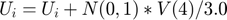
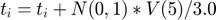
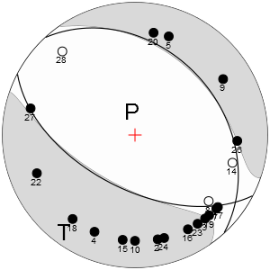
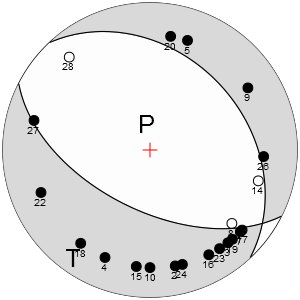
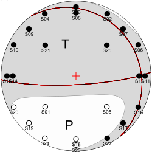
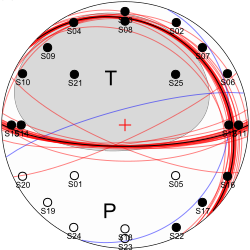
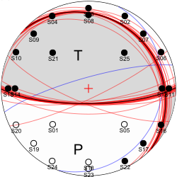
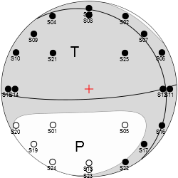
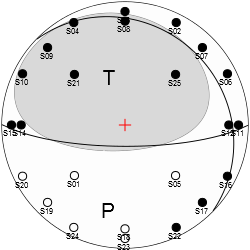
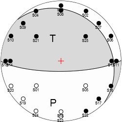

focimt
Perform seismic moment tensor inversion in time domain.
Contents
Syntax
focimt(Input) focimt(Input,'PropertyName',PropertyValue, ...) [Solution, Input] = focimt(...)
Description
Use focimt to perform the seismic moment tensor inversion using fociMT application via MATLAB interface. The function wraps the input and output of data for fociMT executable and provide a convenient interface between MATLAB and fociMT application.
focimt(Input) reads input data and performs moment tensor inversion using fociMT software and default processing parameters. The input array can be either a path to the formatted ASCII input file or Input cell array.
focimt(Input,'PropertyName',PropertyValue, ...) allows to specify additional parameters in a form of PropertyName-PropertyValue pairs.
[Solution, Input] = focimt(...) returns final moment tensor solutions in a form of cell array Solution as well as input cell array Input.
Additional information
For an up-to-date information on software package, see the following website: http://www.induced.pl/focimt.
Parameters
BeachBallSize - Beach ball figure size
500 (default) | scalar value
Defines size of graphical representation of seismic moment tensor solution exported by fociMT software in arbitrary units. For raster formats the value corresponds to pixels.
BeachBallFormat - Beach ball figure file format
'NONE' (default) | 'PNG' | 'SVG' | 'PDF' | 'PS'
Defines format of graphical representation of the seismic moment tensor file (beach ball). By default, no output file is exported. Multiple file formats can be specified by appending the comma or any other delimiter, e.g. 'PNG,SVG,PS' parameter value will export beach balls in three different file formats at once.
CorrectStation - Allows to provide a constant multiplier factor to input amplitudes
cell([]) (default) | {'stationname1',factor1,'stationname2',factor2,...}
Allows to provide a constant multiplication factor to input seismic moments for a specific station or stations. This can be useful when one want to correct a specific station for bad polarity or bad gain value. Also, this parameter is useful while performing the hybrid moment tensor inversion with corrected gains.
Decomposition - Method used for seismic moment tensor decomposition
'JostHerrmann' (default) | 'Vavrycuk'
By default the output structure array contains moment tensor decomposition into ISO, CLVD and DC parts following Jost and Herrmann approach. The alternative method for moment tensor decomposition following Vavrycuk's (2001) approach may be used instead.
DoubleCoupleColor - Color of best double-couple line
1-by-3 vector [R G B] | 1-by-4 vector [R G B A]
Determines color of double-couple line for the best solution. The color vector may be provided either as 1-by-3 element vector containty R, G, B intensities (with 0.0 and 1.0 denoting no and full color component intensity, respectively). The alternative option is to provide 1-by-4 element vector where the fourth parameter determines the color transparency (0.0 - full transparent, 1.0 - opaque).
DrawSolution - Plot focal mechanism or moment tensor solution
empty vector (default) | 1-by-3 element vector | 1-by-6 element vector
Draw seismic moment tensor solution as a beach ball and exits program. The mechanism can be specified as 1-by-3 element vector containing strike, dip and rake of the fault plane in degrees. Alternatively, the User may provide 1-by-6 element vector which will be interpreted as moment tensor components following AKI convention: [M11 M12 M13 M22 M23 M33]. The beach ball will be generated as PNG image.
IgnoreStation - Ignored station(s) list
{} (default) | cell array | string
Use this parameter to specify a list of stations that should be rejected from seismic moment tensor inversion. Single station can be specified as string. If multiple stations are meant to be rejected they must be provided as cell array of strings.
Jacknife - Perform station rejection test
'off' (default) | 'on'
Performs station rejection 'Jacknife' test. In this procedure in the first step the seismic moment tensor inversion is performed using all available stations. Then, the inversion is performed n more times (where n is the number of stations), and each time different station is removed before inversion is performed. See Examples section for details.
Hemisphere - Hemisphere projection
'lower' (default) | 'upper'
Allows to specify whether the obtained fault plane solution is projected onto 'lower' or 'upper' part of the hemisphere in graphical representation of the seismic moment tensor solution (beach ball). Seismological convention, and the default value of this parameter is lower hemisphere projection.
LabelColor - Color of station labels
1-by-3 vector [R G B] | 1-by-4 vector [R G B A]
Determines color of station labels. The color vector may be provided either as 1-by-3 element vector containty R, G, B intensities (with 0.0 and 1.0 denoting no and full color component intensity, respectively). The alternative option is to provide 1-by-4 element vector where the fourth parameter determines the color transparency (0.0 - full transparent, 1.0 - opaque).
MinimumPhases - Minimum number of phases to calculate moment tensor solution
8 (default) | scalar value > 0
Specifies minimum number of phases to perform the moment tensor inversion.
MinusColor - Color of negative station amplitudes
1-by-3 vector [R G B] | 1-by-4 vector [R G B A]
Determines color of negative station amplitudes. The color vector may be provided either as 1-by-3 element vector containty R, G, B intensities (with 0.0 and 1.0 denoting no and full color component intensity, respectively). The alternative option is to provide 1-by-4 element vector where the fourth parameter determines the color transparency (0.0 - full transparent, 1.0 - opaque).
Norm - Optimization norm
'L2' (default) | 'L1'
Defines norm of the cost function as well as the algorithm that is used to perform the seismic moment tensor inversion with fociMT software. By default the seismic moment tensor is performed using L2 norm (faster). However, if input data contains large amplitude misreadings, the user can choose L1 norm which is less prone to larger errors.
NormalFaultColor - Color of double-couple line for normal fault
1-by-3 vector [R G B] | 1-by-4 vector [R G B A]
Determines color of double-couple lines for normal fault. The color vector may be provided either as 1-by-3 element vector containty R, G, B intensities (with 0.0 and 1.0 denoting no and full color component intensity, respectively). The alternative option is to provide 1-by-4 element vector where the fourth parameter determines the color transparency (0.0 - full transparent, 1.0 - opaque).
PShadingColor - Color of compression axis shading
1-by-3 vector [R G B] | 1-by-4 vector [R G B A]
Determines color of compression axis shading. The color vector may be provided either as 1-by-3 element vector containty R, G, B intensities (with 0.0 and 1.0 denoting no and full color component intensity, respectively). The alternative option is to provide 1-by-4 element vector where the fourth parameter determines the color transparency (0.0 - full transparent, 1.0 - opaque).
PlotAxes - Axes plotting on the beach ball.
'off' (default) | 'on'
Toggle on/off plotting cardinal P/T axes on graphical representation of the seismic moment tensor.
PlotCross - Center cross plotting on the beach ball.
'off' (default) | 'on'
Toggle on/off plotting of the center cross on graphical representation of the seismic moment tensor.
PlotDC - Nodal lines plotting on the beach ball.
'off' (default) | 'on'
Toggle on/off plotting of the nodal lines on graphical representation of the seismic moment tensor.
PlotStations - Stations plotting on the beach ball.
'off' (default) | 'on'
Toggle on/off plotting stations on graphical representation of the seismic moment tensor.
PlusColor - Color of positive station amplitudes
1-by-3 vector [R G B] | 1-by-4 vector [R G B A]
Determines color of positive station amplitudes. The color vector may be provided either as 1-by-3 element vector containty R, G, B intensities (with 0.0 and 1.0 denoting no and full color component intensity, respectively). The alternative option is to provide 1-by-4 element vector where the fourth parameter determines the color transparency (0.0 - full transparent, 1.0 - opaque).
Projection - Projection type
'schmidt' (default) | 'wullf'
Defines projection type for graphical representation of the seismic moment tensor inversion (beach ball). The user may use 'schmidt' (equal area) or 'wullf' (equal angle) projection to plot the beach ball.
ProjectDir - Specify output project directory
'' (default) | 'directoryname' (valid directory name)
Use ProjectDir to specify output directory for text files, graphical representations of moment tensor inversion and other files. Also, the input data table (if exists) is copied to this directory after the inversion.
Resample - Perform additional moment tensor inversions using resampled input datasets
[] (empty array) | 1-by-2 or 1-by-3 or 1-by-4 or 1-by-5 element vector V
The first element V(1) of vector V specified the number of resamplings of the original input phase dataset. The input data will be randomly resampled N times and the inversion will be performed for all randomly resampled datasets as well as for the original dataset. This will then result in N+1 moment tensor inversion solutions with the first solution calculated from the unperturbed original dataset and the following solutions calculated from resampled datasets.
When V(2) is greater than 0, on average V(2)*100% input phase data polarities will be reversed (equivalent of -rp option in focimt command line application). The typical value of V(2) is e.g. 0.03 (which means about 3% of input phase data polarities will be reversed).
When V(3) is greater than 0, on average V(3)*100% input phase data will be removed (equivalent of -rr option in focimt command line application). This option is somehow similar to the Jacknife Test, however now more than one station may be removed from input phase data, as it is controlled by the V(3) parameter. For example, if one want to asses how the removal of up to 5% of input phase data affects the moment tensor inversion results, the value of V(3) should be 0.05.
When V(4) value is greater than 0, all input amplitudes in resampled input phase data will be randomly perturbed. Each amplitude of resampled input data is modified using the following formula: , where N(0,1) means a random sample drawn from the Gaussian distribution of mean 0 and standard deviation 1. Note that the random number drawn is scaled by a constant factor of 3.0. The option is equivalent to -ra option in focimt application.
Finally, when V(5) parameter is larger than 0, the input takeoff angle data will be randomly biased. Similarly to the Amplitude Resampling, the takeoff angle of each phase is modified using the following formula: , where N(0,1) means a random sample drawn from Gaussian distribution of mean 0 and standard deviation 1. The takeoff angle resampling may be used to simulate the uncertainties in the velocity model. The typical values should not exceed a couple of degrees.
Solutions - Type of seismic moment tensor inversions to perform
'FTD' (default) | 'F' | 'T' | 'D' | 'FT' | 'TD' | 'FD'
By default, three types of seismic moment tensors are calculated: 1) full (unconstrained) moment tensor (character 'F'), deviatoric moment tensor (character 'T') with no volumentric change (i.e. trace = 0) and double-couple constrained seismic moment tensor (character 'D'), where both trace and determinant of the tensor are 0. The user may wish to constrain the output tensors to only selected MT types to reduce the amount of output data.
StrikeSlipFaultColor - Color of double-couple line for strike-slip fault
1-by-3 vector [R G B] | 1-by-4 vector [R G B A]
Determines color of double-couple lines for strike slip fault. The color vector may be provided either as 1-by-3 element vector containty R, G, B intensities (with 0.0 and 1.0 denoting no and full color component intensity, respectively). The alternative option is to provide 1-by-4 element vector where the fourth parameter determines the color transparency (0.0 - full transparent, 1.0 - opaque).
ThrustFaultColor - Color of double-couple line for thrust fault
1-by-3 vector [R G B] | 1-by-4 vector [R G B A]
Determines color of double-couple lines for thrust fault. The color vector may be provided either as 1-by-3 element vector containty R, G, B intensities (with 0.0 and 1.0 denoting no and full color component intensity, respectively). The alternative option is to provide 1-by-4 element vector where the fourth parameter determines the color transparency (0.0 - full transparent, 1.0 - opaque).
TShadingColor - Color of tension axis shading
1-by-3 vector [R G B] | 1-by-4 vector [R G B A]
Determines color of tension axis shading. The color vector may be provided either as 1-by-3 element vector containty R, G, B intensities (with 0.0 and 1.0 denoting no and full color component intensity, respectively). The alternative option is to provide 1-by-4 element vector where the fourth parameter determines the color transparency (0.0 - full transparent, 1.0 - opaque).
VelocityModel - Input 1D velocity model
[] (default) | n-by-2 matrix
Allows to provide a 1D velocity model as n-by-2 matrix where first column corresponds to tops of the lateyers (km) and second column reflects layers' widths (km/s). When this parameter is specified it is assumed the input file is provided in 1D velocity model format.
Verbose - Display additional output in console window
'off' (default) | 'on'
Turns on/off the display of additional processing information in console window.
Examples
Example 1
Use sample input fociMT file example1.txt and perform the seismic moment tensor inversion using default parameters. Then we gather the output data and input data in two cell array structures:
[Output, Input] = focimt('./examples/example1.txt');
Input
Output
Input =
[1x1 struct]
Output =
[1x1 struct]
As the input data contains single seismic event, both Output and Input are cell arrays with only one element corresponding to the processed seismic event. To see the particular seismic moment tensor solution from the particular seismic events, use cell indexing access:
Output{1}
ans =
event_id: 'example1_ev01'
n_trials: 1
calculation_dt: 7.3660e+05
full: [1x1 struct]
deviatoric: [1x1 struct]
dc: [1x1 struct]
The seismic moment tensor solution for a particular event contains in fact three types of seismic moment tensors: the full moment tensor, the deviatoric (trace-null) moment tensor and the double-couple moment tensor. They can be accessible by inspecting full, clvd and dc structures, of the cell array element. For example, to see the full moment tensor inversion result, you have to access:
Output{1}.full
ans =
Type: {'N'}
STATION_ID: 0
ISO: 5.6167
CLVD: 17.5724
DC: 76.8109
M0: 1.3183e+12
MT: 1.3322e+12
M0ERRMAX: 5.7314e+10
MW: 2.0500
P: [350.5200 72.6106]
T: [215.4180 12.5082]
B: [122.7420 11.8848]
F1: [115.3490 58.5574 -103.9690]
F2: [320.8430 34.1130 -68.4559]
Fault: {'NF'}
MXX: [1x6 double]
CXX: [1x6 double]
RMSERROR: 0.4308
Station: {1x21 cell}
UMEASURED: [1x21 double]
UTH: [1x21 double]
The input data originally available inside input file example1.txt are interpreted internally in focimt.m function and are returned in the second output parameter of the routine:
Input{1}
ans =
event_id: 'example1_ev01'
n_phases: 21
format: 'raw'
matrixmode: 1
Station: {21x1 cell}
Component: {21x1 cell}
Phase: {21x1 cell}
OMEGA: [21x1 double]
AZIMUTH: [21x1 double]
AOI: [21x1 double]
TAKEOFF: [21x1 double]
V: [21x1 double]
R: [21x1 double]
DENSITY: [21x1 double]
Example 2
We can create a graphical representation of the seismic moment tensor in a form of a beach ball plot. In this case, we have to execute focimt.m routine with additional properties. For example, the following code will perform the moment tensor inversion and three pictures in PNG format will be generated:
focimt('./examples/example1.txt','BeachBallFormat','PNG');
The code above produce three pictures, one for each type of moment tensor solution:


The available formats are PNG, PDF, PS and SVG. The graphical representation of the moment tensor solution can be customized using different properties: Use BeachBallSize property to generate the picture of the certain size. The Projection parameter controls the type of stereonet projection (either equal area or equal angle projections is available). Finally, the Hemisphere parameters allows to choose between lower (default) or upper hemisphere projection. a beach. You can combine the properties to obtain the desired figure shape. For example:
focimt('./examples/example1.txt','BeachBallFormat','PDF','Projection','wullf','Hemisphere','upper');
will produce the upper hemisphere equal-angle stereonet projection of the seismic moment tensor solution in PDF format.
Example 3
In this example we perform the seismic moment tensor inversion of two events using Jacknife test to check the stability of both inversions. We export the solution to SVG files and slightly modify the output figure size. Note that the SVG vector format is a convenient way to present your results on web pages, as nowadays it is supported by all web browsers:
focimt('./examples/example2_raw.txt','BeachBallFormat','SVG','BeachBallSize',250,'Jacknife','on');
The resulting graphical representation of the seismic moment tensor inversion solutions for the first seismic event look as follows:



The first seismic moment tensor solution corresponds to the uncostrained (full) moment tensor. The second solution presents the seismic moment tensor that was constrained to not to have the volumetric changes (i.e. the trace of the tensor was forced to be 0 during inversion). This solution correspond to the seismic moment tensor containing only CLVD (compensated linear vector dipole) and DC (double-couple) components. Finally, the last figure presents the DC constrained moment tensor (the determinant and trace of the tensor is kept to be null during inversion).
The resulting focal mechanisms contains additional nodal lines. Each line corresponds to a different moment tensor solution calculated using input data will all but one station. Therefore, in addition to the original seismic moment tensor solution, there is N more nodal lines where N is the number of stations (or phases) picked.
The Jacknife test is useful to determine whether removal of a particular station strongly affects the seismic moment tensor inversion results. In this case, the particular Jacknife solution will likely differ significantly from the remaining ones. This can be a useful test to detect bad stations.
Example 4
We perform the moment tensor inversion using the built-in 1D velocity model ray-tracer. When 1D velocity model and 1D ray-tracer is used, the input data must be provided using different file format. We firstly define the velocity model:
VMODEL = [0.00 3.00 8.00 20.00 22.00; 4.10 5.47 5.75 6.02 7.90]';
The velocity model matrix is composed of two colums. The elements in the first column correspond to layer tops (in km) and the elements from the second column to P-wave velocity (km/s). Once we have the velocity model, we can perform the moment tensor inversion:
focimt('./examples/example2_1d.txt','BeachBallFormat','PNG','BeachBallSize',250,'VelocityModel',VMODEL);
As the input phase data were the same as in example 3 (only the input format has changed), the resulting moment tensor solutions are identical:



See also
hybridmt | readraw | readvel1d | genmt_raw | genmt_vel1d